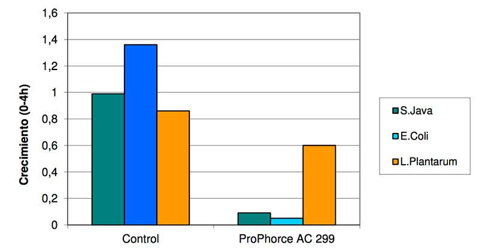
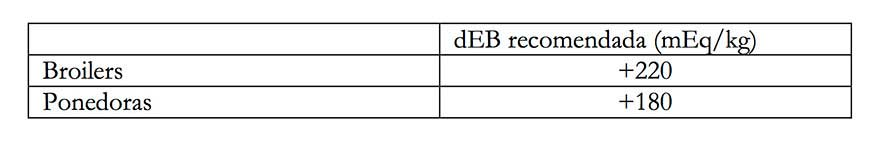
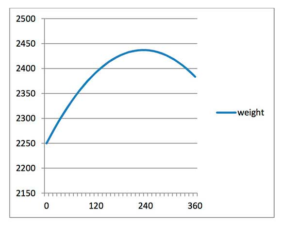
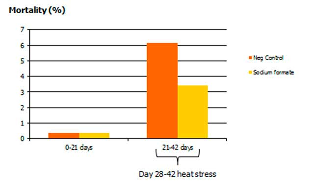

La producción ganadera está permanentemente sometida a cambios que condicionan de manera muy importante la rentabilidad de las empresas. Globalización, normativas de bienestar animal, bioseguridad, etc. son elementos que escapan del control de nuestras industrias pero que condicionan seriamente su viabilidad. Uno de estos factores es el coste del pienso, que muy a nuestro pesar, ha tomado protagonismo creciente en los últimos años. Es por este motivo que la optimización de costes en alimentación animal es un factor clave para la rentabilidad de las producciones y, por tanto, el empleo de aditivos en los piensos debe estar plenamente justificado en función de los objetivos de su inclusión.
Desde hace más de 40 años, el ácido fórmico se ha utilizado en alimentación animal por ser eficaz en el control de la carga microbiana de los piensos (efecto antimicrobiano), por mejorar la digestibilidad de los piensos (efecto acidificante) y, como consecuencia, ser un factor de equilibrio de la flora digestiva. Sin embargo, el ácido fórmico es un producto corrosivo, destruye materiales no resistentes a su acción, y tienen un efecto acre para el olfato, lo que supone una molestia para los operarios que los manipulan. Estos 2 efectos se pueden evitar mediante el uso en forma de formiato sódico.
El formiato sódico está autorizado como aditivo conservante. Es un polvo de color blanco, estable y no corrosivo, que no es molesto ni irritante en su manipulación. Si bien están incluidas dentro del grupo de los aditivos conservantes del pienso, es una vez ingerido por las aves cuando desarrolla mejor sus propiedades como acidificante.

Su capacidad en el control de bacterias es bien conocida desde hace años, resultando ser un eficaz bacteriostático frente a enteropatógenos. En figura 1 se observa cómo el formiato sódico frena el crecimiento de Salmonella java y Echerichia coli, lo que reduce el riesgo de desequilibrios o patologías intestinales, pero apenas afecta el crecimiento de Lactobacilus plantarum.. El efecto bacteriostático solo afecta a bacterias patógenas, mientras que bacterias acidófilas, como Lactobacilus, mantienen su capacidad de crecimiento, lo que favorece el desarrollo y predominio de la flora intestinal acidófila. El predominio de las bacterias acidófilas favorece un proceso digestivo más eficiente y proporciona una mayor estabilidad y resistencia de la flora frente a desequilibrios provocados por bacterias patógenas o situaciones de stress.
Figura 1: Impacto del formiato sódico (ProPhorce AC 299) sobre el crecimiento de enterobacterias (CCL, 2008)
El formiato sódico tiene un comportamiento óptimo como acidificante, pero es además una excelente fuente de sodio altamente disponible. Este hecho permite reducir uso en los piensos de otras fuentes de este mineral, con el consiguiente ahorro económico. El interés de la inclusión de fuentes de sodio en la formulación de los piensos para la avicultura tiene 3 objetivos: alcanzar los requerimientos nutricionales básicos, incrementar el balance electrolítico de los piensos y reducir el impacto del stress por calor en las aves.
El balance electrolítico (dEB) establece la relación entre aniones y cationes de un pienso. Las fórmulas para su cálculo son varias, pero por motivos prácticos la más utilizada es la formulada por Mogin (1981):
dEB (mEq/kg)= Na+ + K+ - Cl-
Tanto el ion sodio (Na+) como el ion potasio (K+) incrementan el dEB. Un mayor dEB se relaciona con mejores producciones. El nivel óptimo del dEB es un parámetro bien definido que varía en función de la especie, tipo de producción y edad de los animales (Figura 2).
Figura 2: Recomendaciones sobre niveles óptimos de dEB (Schothorst Feed Research)
Los valores de dEB recomendados están definidos en base a trabajos publicados en distintas especies y fases de producción. En la siguiente tabla (Figura 3) se observa la relación entre crecimiento y balance electrolítico del pienso en broilers. Los datos obtenidos en este estudio son coincidentes con otros trabajos publicados sobre el mismo tema. La conclusión es que un incremento en el dEB del pienso tiene un impacto positivo sobre en el consumo y el índice de conversión de los broilers, lo que se traduce en una mayor ganancia de peso.
Figura 3: Efecto del dEB sobre la ganancia de peso en broilers de 0 a 42 días de vida (Borges et al, 2003)
En la avicultura moderna, factores como el elevado potencial productivo de las aves o la alta densidad en las manadas favorecen situaciones de stress, especialmente cuando las temperaturas son elevadas (stress térmico). Hay maneras de ayudar a los animales a superar estas situaciones de estrés. El manejo del dEB es una de ellas.
La gráfica siguiente muestra los resultados de mortalidad de una prueba realizada en situaciones de estrés térmico en España (2012). En ella, las aves suplementadas con formiato sódico tuvieron un menor número de bajas que los animales control. Las bajas se concentraron en los últimos días de engorde (4,9% versus 7,2%).
Figura 4: Efecto del formiato sódico sobre la mortalidad en broilers en situación de estrés térmico (Perstorp,2012)
Las dos fuentes de sodio más comúnmente utilizadas en alimentación animal son la sal y el bicarbonato sódico. La inclusión de sal está muy limitada por que aporta cloruros, cuyo exceso se asocia con alteraciones en los procesos de absorción del agua y electrolitos en el intestino provocando blandeo en las heces y diarreas.
El bicarbonato sódico es, además de una fuente de sodio, un poderoso agente tampón. Este efecto tampón es negativo para los animales monogástricos, ya que dificulta la acidificación gástrica que es fundamental en el proceso digestivo. Una insuficiente acidificación gástrica conlleva una menor capacidad de digestión de las proteínas y menor tiempo de retención del alimento en el estómago. Estos dos efectos provocan una deficiente pre-digestión del pienso, lo que reduce la absorción de nutrientes en el intestino y favorecen el desarrollo de enteropatógenos en los tramos distales del intestino.
El formiato sódico es una fuente de ion formiato altamente disponible, de fácil manejo y no corrosiva que favorece los procesos de acidificación gástrica; y, al mismo tiempo, una fuente de sodio altamente disponible que no aporta cloruros, ni tiene efecto tampón. ProPhorceTM AC 299 formiato sódico de alta concentración y fluidez, fabricado por Perstorp con el objetivo de evitar procesos de apelmazamiento, muy común dada la elevada higroscopicidad del formiato sódico en estado natural.